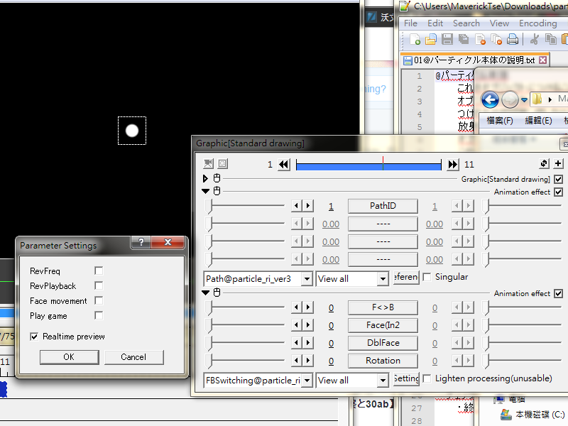

Fig02: Path@ (1st effect panel) and FBSwitching@ (2nd effect panel).Dialog on the left is part of FBSwitching.
Path
Define an external file. To be used with Emission@, Text@, Image@, Style@, Funnel@ and Object3D@. Multiple Path@ can be attached to the same object.
Sliders
There is only a single slider that defines the ID to be associated with a file.
Reference button
Click on this then select a file
Check box: Singular
When files in the same folder are named as a number series, e.g.
01.avi
02.avi
03.avi
Ticking this check box means only 01.avi will be used for particle generation. Disabling this option will utilize 01.avi, 02.avi and 03.avi for particle generation.
FBSwitching
For swapping particle image as it moves and spinning image with a different back-side.
Sliders
F< >B
Change the order of emission. Usually the same as value 0
At value 0, the particle emitted second is considered front
At value 1, the particle emitted first is considered front
Face(In2
Define if current object is the front or back side of the composite object.
0 means front side, 1 and 2 for back side
1 and 2 differ by their facing when displayed
DblFace
Enable synthesis of double-side object as defined by Face(In2 slider
Please set Seed value of ParticleRender to negative value when enabling this option
Rotation
Change the order of axis rotation processing, giving variety to rotation pattern.
0: z > y > x (no tilt)
1: z > x > y
2: z > y > x
3: y > z > x
4: y > x > z
5: x > y > z
6: x > z > y
Setting RotSpeed(ParticleRender) on all axis probably gives undesirable result.
Check box
Lighten processing(unusable)
(Ignore this)
Setting dialog
RevFreq
By default, Frequency value is defined as number of particles per 100ms. When this box is checked, The value's meaning changes to "interval between successive emission". When Frequency value is 100, one particle will be emitted every 1 second. At 200, emit every 2 seconds.
RevPlayback
Effect will be generated in reverse motion
Face movement
Particle's output direction will depends on object's movement vector. Only consider movement on the xy-plane, ignoring movement through depth.
Since calculation depends on particle's initial rotation and angular speed, setting InitialRot and RotSpeed (ParticleRender) to 0 is recommended.
Play game
Play a mini-game
First make this object very very long~ then preview in the playback window.